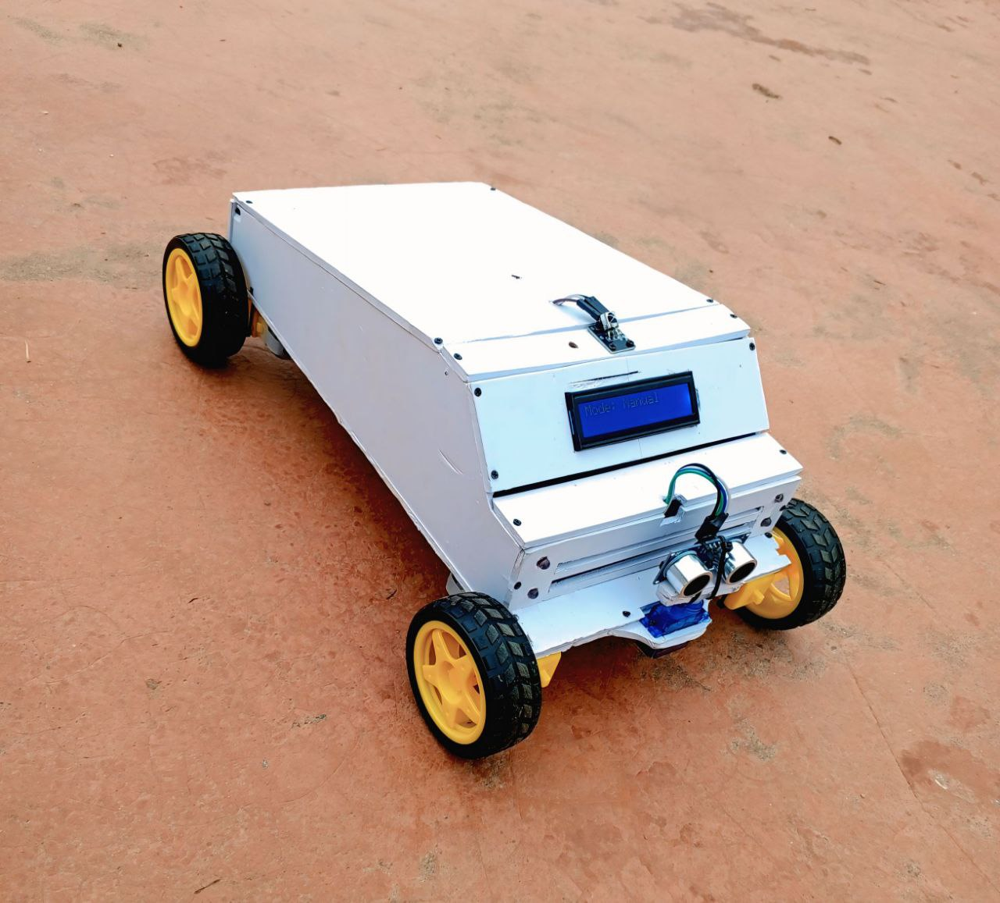
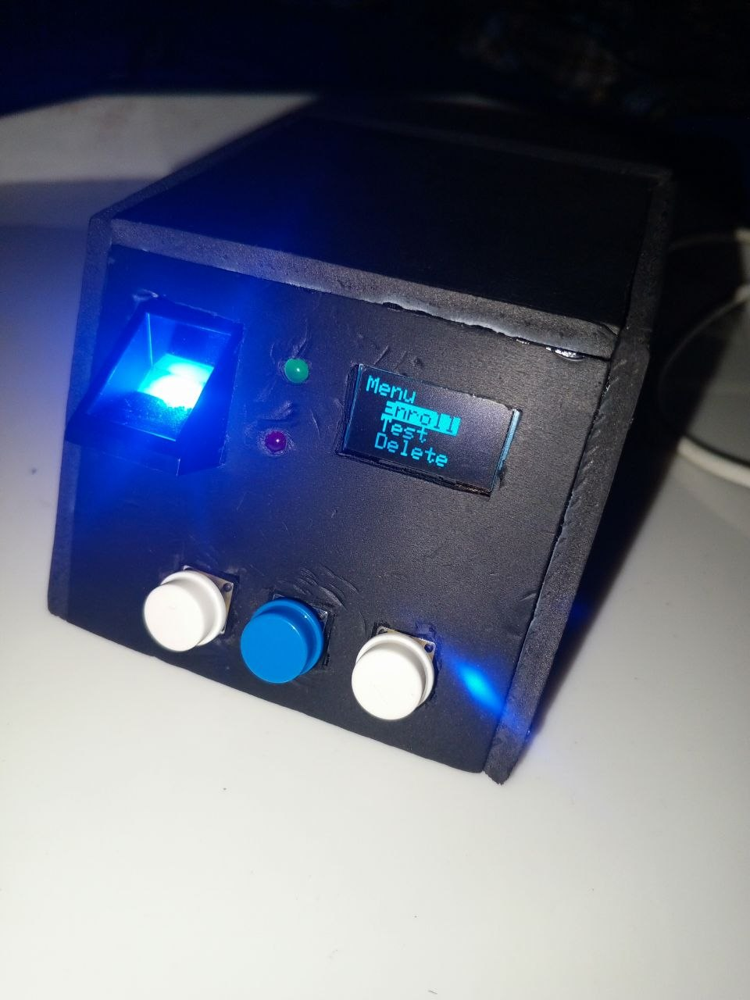
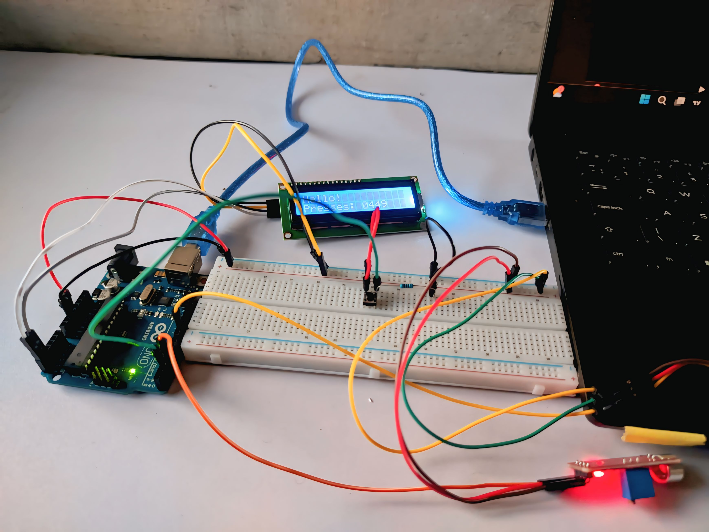

ModuBot is a modular robotic system built on an Arduino microcontroller. It combines manual driving, obstacle avoidance, and memory-based patrol with route learning. The robot also integrates environmental sensing (DHT11 & LDR), a payload delivery hook and visual/audio alerts. Powered by dual 18650 batteries, ModuBot runs efficiently for hours and is currently being upgraded to ESP32 for wireless features.

This project is a low-cost biometric access control system built with an Arduino Uno and AS608 fingerprint sensor. It allows users to enroll, verify, delete, and log fingerprints through a simple OLED display interface, buttons, LEDs, and buzzer feedback. The system was designed to be robust, handling imperfect fingerprints (dry, moist, scarred) and optimized for memory usage. With a total cost under ₦33,000, it demonstrates that reliable biometric security can be achieved with accessible components.

A sound-activated Arduino project built to play a game. It listens for a loud beep from the game and presses a key using a servo. The system tracks the number of presses and shows it on a 16x2 I2C LCD. Includes a reset button to start over.